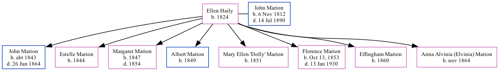

Ellen Marion (née Haily) 1824 -
[ Home ] | [ Calendar ] | [ Surnames Index ] | [ Family History ]Ellen Haily, the wife of John Marion (the four times great-uncle of Michele Copp (née Phillips)), was born in South Carolina in 18241,2had 8 children, John F, Estelle, Margaret Josephine, Albert, Mary Ellen "Dolly", Florence Catherine, Effingham and Anna Alvinia (Elvinia).
Throughout her life, she lived in St Michael and St Phillip, Charleston, South Carolina in 18501; and in Charleston Ward 4, Charleston, South Carolina in 18602.
Children
- John F was born c. 1843
- Estelle was born in 1844
- Margaret Josephine was born in 1847
- Albert was born in 1849
- Mary Ellen "Dolly" was born in 1851
- Florence Catherine was born in Oct 13, 1853
- Effingham was born in 1860
- Anna Alvinia (Elvinia) was born in Nov 1864
Citations
- 1850 United States Federal Census Online publication - Provo, UT, USA: The Generations Network, Inc., 2005.Original data - United States of America, Bureau of the Census. Seventh Census of the United States, 1850. Washington, D.C.: National Archives and Records Administration, 1850. M432,
- 1860 United States Federal Census Online publication - Provo, UT, USA: The Generations Network, Inc., 2004.Original data - United States of America, Bureau of the Census. Eighth Census of the United States, 1860. Washington, D.C.: National Archives and Records Administration, 1860. M653, 1
Family Tree
Generated by ged2site. Last updated on Sep 9, 2024